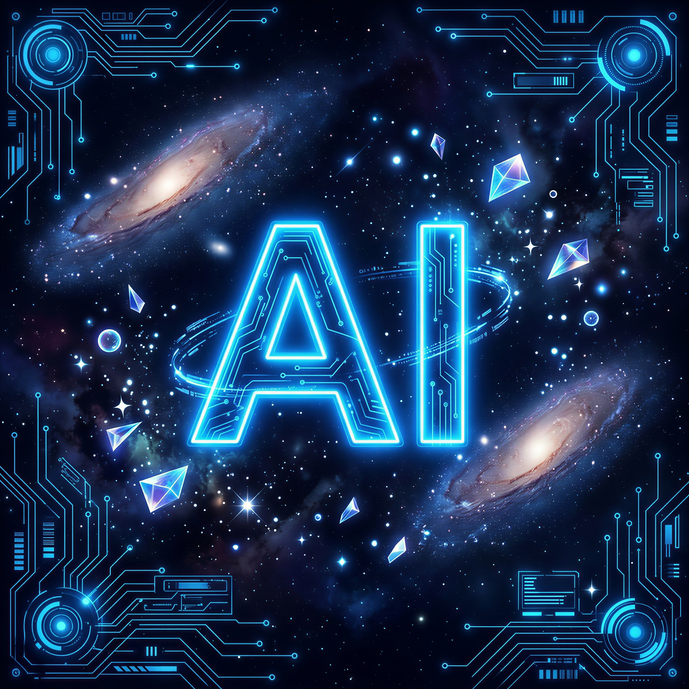

Antes que alguém pergunte: "por que você usou IA pra criar as imagens em vez de contratar um artista?", vale lembrar o tamanho do que estou construindo aqui. A história conta com dezenas de heróis e incontáveis vilões (entre principais, secundários e minions), sem contar cenários, armas, habilidades e todas as variações de roupas (versão de combate, casual, evolução de traje, etc.). Se eu fosse contratar um artista para ilustrar tudo isso, eu provavelmente precisaria ganhar na loteria primeiro. A intenção nunca foi desvalorizar o trabalho de ninguém. Como criador independente, desenvolvo de forma autoral todo o conceito, personagens e narrativa do projeto, usando a IA apenas como ferramenta de apoio visual para transformar ideias e rascunhos em representações mais claras. Os personagens são originais, criados do zero ou a partir de referências usadas como inspiração e reinterpretadas dentro de um universo próprio, enquanto o roteiro, as reviravoltas e todos os conceitos da história são inteiramente meus.